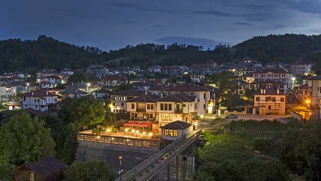

Болгария
Болгария лежит в восточной части Балканского полуострова, омывается Чёрным морем. Через страну
проходит
удобный и кратчайший путь из Западной и Центральной Европы в Восточное Средиземноморье и на Ближний
Восток.Граничит с Грецией и Турцией (на юге), Сербией и Македонией (на западе) и Румынией (на
севере).

Болгария лежит в восточной части Балканского полуострова, омывается Чёрным морем. Через страну
проходит
удобный и кратчайший путь из Западной и Центральной Европы в Восточное Средиземноморье и на Ближний
Восток. Граничит с Грецией и Турцией
(на юге), Сербией и Македонией (на западе) и Румынией (на севере).Болгария — горно-возвышенная
страна.
Миллионы лет назад, в эпоху альпийского орогенеза, горы поднялись со дна океана, приобретя под
влиянием
эрозионно-денудационных процессов очень живописные формы. Болгария занимает 22% площади Балканского
п-ова, а большая часть страны покрыта горами и возвышенностями. Север Болгарии занимает Дунайская
холмистая равнина (высоты от 100 до 500м), на востоке переходящая в
плато Добруджа. К югу от равнины расположены горы Стара-Планина (Балканские горы), пересекающие с
запада на восток всю страну (высшая точка — 2376 м). Юг и юго-запад занимают горы Рила.
Болгария — горно-возвышенная страна. Миллионы лет назад, в эпоху альпийского орогенеза, горы
поднялись со дна океана, приобретя под влиянием эрозионно-денудационных процессов очень живописные
формы
Для небольших традиционных болгарских городков характерна низкая застройка, особенно в старых
районах,с
узкими улочками и притиснувшимися друг к другу домиками. В Болгарии в основном распространены горные
леса — смешанные в нижних ярусах и с преобладанием
в древостое хвойных пород — в верхних. В начале 1990-х гг., во время социально-экономического
кризиса,
численность приезжающих в Болгарию туристов резко сократилась. Сегодня власти страны делают всё,
чтобы привлечь как можно больше
отдыхающих. Благо, для этого есть все условия, главное из которых — прекрасное побережье Чёрного
моря
с городами-курортами (на фото: основанный древними греками видами 8VII в. до н.э. под названием
Аполлонии Созопол) Пирин и Родопы.
В массиве Рила (наиболее высокая часть всего Балканского п-ова) находится высшая точка Болгарии и
Балкан — Мусала (2925 м). Между Родопами и горами Стара-Планина, вдоль долины реки Марицы,
простирается
самая плодородная в стране Верхнефракийская
низменность, на востоке открывающаяся к Причерноморской низменности. На Черноморском побережье
Болгарии много превосходных пляжей, а на крайнем юго-востоке расположены северные отроги заходящих с
территории Турции гор Странджа (тур.
Истранджа) Черноморском побережье). В горах наблюдается высотная климатическая поясность. Средняя
температура самого холодного месяца года января составляет -6°С в горах, до -3°С на севере и в
центре,
и ок. 2°С выше нуля на юге и на
побережье Чёрного моря; в июле, соответственно, 18, 23 и 25°С. Годовое количество осадков колеблется
от
450-500 мм на севере и востоке до 1200 мм в горах. Летом во многих районах (главным образом на
равнинах)
случаются засухи.
Болгария лежит в поясе умеренно тёплого климата, сухого на севере и переходного к средиземноморскому
— на юге (особенно в долинах рек Струма и Места, а также на Черноморском побережье). В горах
наблюдается высотная климатическая поясность. Средняя температура самого холодного месяца года
января составляет -6°С в горах, до -3°С на севере и в центре, и ок. 2°С выше нуля на юге и на
побережье Чёрного моря; в июле, соответственно, 18, 23 и 25°С. Годовое количество осадков колеблется
от 450-500мм на севере и востоке до 1200 мм в горах. Летом во многих районах (главным образом на
равнинах) случаются засухи
Речная сеть Болгарии хорошо развита, а водные ресурсы используются для орошения сельскохозяйственных
угодий и выработки электроэнергии. Все болгарские реки принадлежат бассейну Чёрного и Эгейского
морей.
Крупнейшая река страны (протяжённость
в пределах Болгарии — 471 км)— впадающий в Чёрное море Дунай (правые притоки Лом, Огоста, Искыр,
Осым,
Янтра). Крупной рекой бассейна Эгейского моря является берущая исток в горах Рила Марица (левый
приток
Тунджа, правый — Арда). Камчия
впадает в Чёрное море, а Струма и Места (в Греции— Стримон и Нестос) — в Эгейское.
Леса (главным образом дубовые, а в горах буковые, буково-пихтовые и еловые) занимают 1/3 территории
Болгарии. Выше пояса горных лесов простирается зона редколесья и альпийских лугов. Из кустарниковых
зарослей типичен шибляк — низкорослые
колючие ксерофитные кустарники и невысокие листопадные деревья (можжевельник, держи-дерево,
кустарниковый дуб и др.). На северо-востоке, в Добрудже, распространена степная растительность.
ПЛОДОРОДНЫЕ ЗЕМЛИ И РОЗОВОЕ МАСЛО
Это индустриально-аграрная страна, главные минеральные богатства которой — небольшие залежи каменного
и бурого угля, цинка, свинца, железа, меди, каменной соли и нефти. Развиваются электромашиностроение
(производство станков и горнодобывающего
оборудования, оросительных систем), металлургия (выплавка цинка, свинца, меди), электроника,
транспортное машиностроение (подвижной состав для железных дорог, двигатели, трамваи,
электропогрузочная техника), нефтехимия, фармацевтика,
парфюмерная (Болгария занимает первое место в мире по производству розового масла текстильная и
пищевая
отрасли. На 56% территории страны, занятых под частично орошаемые сельскохозяйственные угодья,
выращивают злаковые культуры (пшеницу,
ячмень, кукурузу), подсолнечник, табак, хлопчатник, кормовые культуры, сахарную свёклу, овощи
(помидоры, огурцы,сладкий болгарский перец ратунду, тыкву), виноград, фрукты (яблоки, персики,
сливы), эфиромасличные растения (мяту, лаванду,
розу). Развито животноводство (разведение овец, крупного рогатого скота, свиней, коз, лошадей,
ослов).

СОЛНЕЧНЫЙ БЕРЕГ И ЗОЛОТЫЕ ПЕСКИ
Климат, песчаные пляжи и курорты Черноморского побережья, а также неплохие центры зимних видов
спорта в
горах благоприятствуют развитию в Болгарии туризма. В крупнейшем городе и столице страны Софии можно
осмотреть многочисленные церкви, мечети и другие
памятники архитектуры. Расположенные южнее Софии величественные горы Рила — идеальное место для
пеших
походов и занятий зимними спорта. На юго-западе, у границы с Грецией, на склонах горного массива
Пирин,
среди узких ущелий и отвесных
обрывов лежит старинный город Мелник, известный с древних времён как центр виноделия. В бывшей
столице
Второго болгарского царства (ХII-ХIV вв.) Велико-Тырнове, на холме Царевец, можно увидеть
сохранившиеся
до наших дней остатки крепостей,
церквей и дворцов, а также обрыв, с которого в средние века сбрасывали в мутные воды реки Янтры
преступников. На берегу Чёрного моря находится древний город-музей Несебыр (до 1934 г. Месемврия),
основанный античными греками ещё в VI
в. до н.э. Близ Несебыра расположен курортный комплекс «Солнечный Берег». Большой популярностью в
Болгарии пользуется лыжный спорт, а самым лучшим горнолыжным курортом считается находящийся в 70 км
к
югу от Софии Боровец. Золотые Пески,
Созопол, Бургас — все эти черноморские курорты ассоциируются с прекрасными песчаными пляжами, тёплым
морем и красивейшими видами.